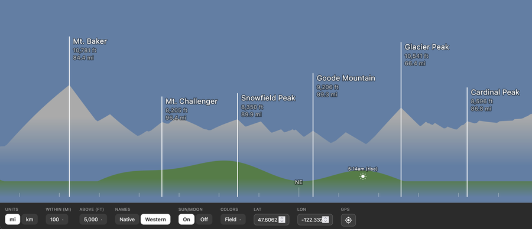

Flag Fade
Guess-the-flag game — SVG flags reveal in three phases (outline → shapes → colors) against a 20-second clock. The sooner you guess, the more points

Web Audio Synth
Four-voice generative music machine — chords, lead, bass & synth drums with selectable timbres and lead modes. WAV / MP3 / MIDI export, shareable patch links

Idea Garden
First-person 3D garden where ideas hang as cards from a lit pergola

Waymarker
Browser-based AR peak-finder that labels the mountains around you

Rapid Brand Interactives
Concept mini-games for brand loyalty programs

Water Temps
Crowd and public water-temperature readings on an interactive map

911 Dashboard
Monthly 911 call patterns broken down by type

Timeline Branches
Branching timeline of people moving between groups over time